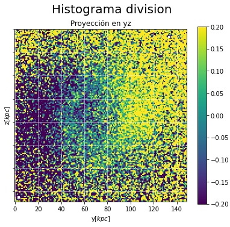
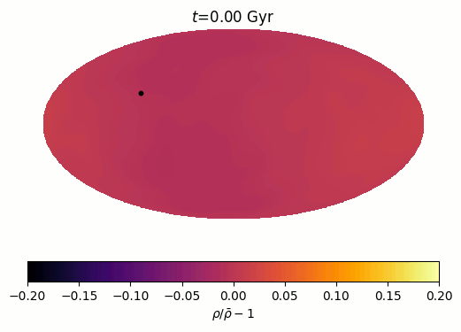

Midiendo la distribución de Materia Oscura
en la Vía Láctea con el Observatorio
Vera Rubin


Stephanie Carolina Cely
Nicolás Garavito, Veronica Arias.
Qué compone la Vía Láctea?

Gran Nube de Magallanes (LMC)


El halo estelar sigue al de materia oscura

Observaciones tentativas del dark matter wake
Como detectar velocidades en 3D?
- Campo de visión de 9.6 grados cuadrados
- Luna ocupa 0.2 grados
- 4300 imágenes para cubrir el cielo del hemisferio sur.
- Tarda 5 noches (12 años otros observatorios).
- Mayor volumen de datos (1000 veces más informacion)
- 100x más profundidad.

Dark Matter Halo

Datos observables revelarian morfologia -> propiedades de la materia oscura e indicios sobre modelos.

Analisis de datos
- Simulaciones de N-cuerpos. Código GADGET-4
- 1 millón de particulas.
- 2 set de datos:
- Estado inicial, halo sin perturbacion
- Luego de interaccion con LMC
- Datos: posiciones y velocidades en 3D con su id
- Histogramas: Posición, cálculo de momento angular usando la velocidad de las partículas y su id.
- Clasificación en regiones de bajo y alto momento angular
Intuición fisica: Momento angular delimita espacialmente el wake?
\[\begin{aligned} \vec{L} = \vec{r} \times \vec{v} \end{aligned} \]Resultados
Visualization resources by Garavito-Camargo
Contraste de densidad proyección yz
 Momento angular L en eje x en funcion de la distancia r


Partículas con momento angular bajo crecen con la interaccion de LMC y corresponden espacialmente al wake.

Conclusiones
- La nube de Magallanes induce una estela de materia oscura en el halo de materia oscura de la Vía Láctea debido a la fricción dinámica.
- El observatorio Vera Rubin va a proporcionar un mapa sin precedentes del halo estelar de la Vía Láctea en 5D.(posiciones y movimientos propios) Estos datos seran ideales para detectar la estela de materia oscura
- Estrellas asociadas a la estela de materia oscura pueden ser detectadas por su cambio en momento angular.
Trabajo a futuro
- Seguir refinando el método de selección.
- Implementar procesos de automatización de este algoritmo.
- Aplicar el método en simulaciones cosmológicas (FIRE).